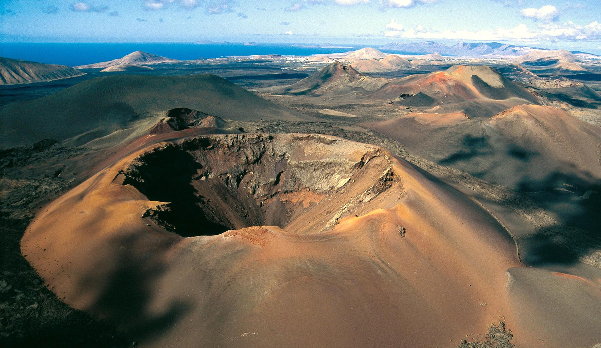
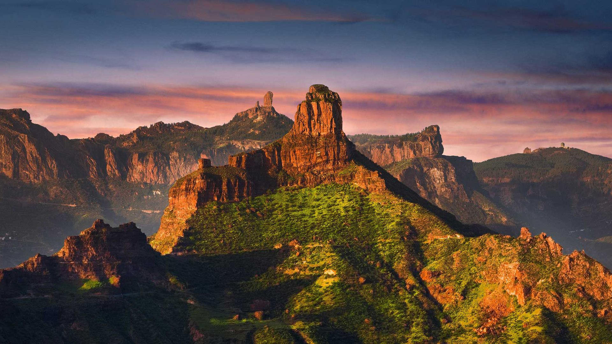
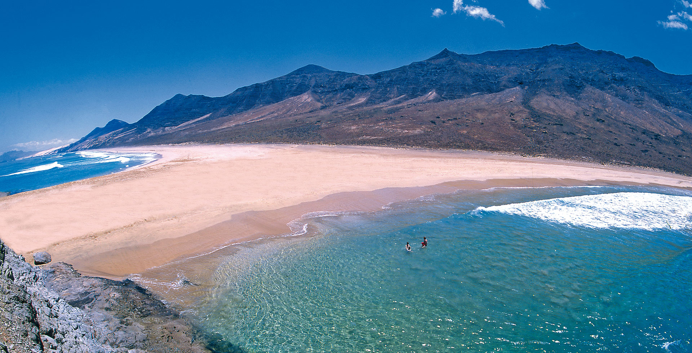

Популярные направления
Сегодня посещаем Канарские Острова
Лансароте
Самый необычный остров Канарского архипелага.
 По этой ссылке можно обратиться к википедииГран Канария
Третий по размеру остров Канарского архипелага.
 По этой ссылке можно обратиться к википедииФуэртевентура
Канарских островов Фуэртевентура славится круглогодичным солнцем.
 По этой ссылке можно обратиться к википедииЛа Пальма
Остров Ла Пальма. Извержение вулкана "Кумбре Вьеха".
 По этой ссылке можно обратиться к википедии
По этой ссылке можно обратиться к википедии